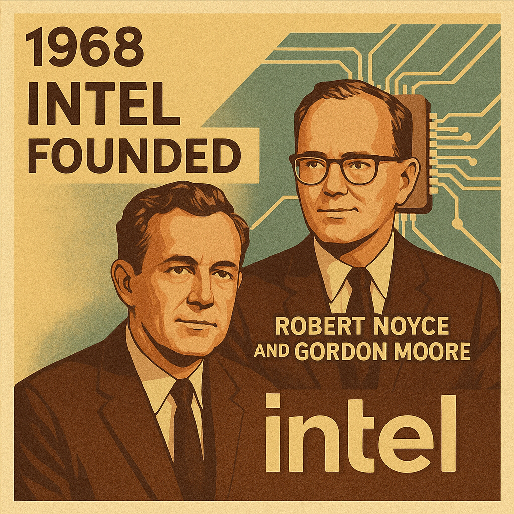
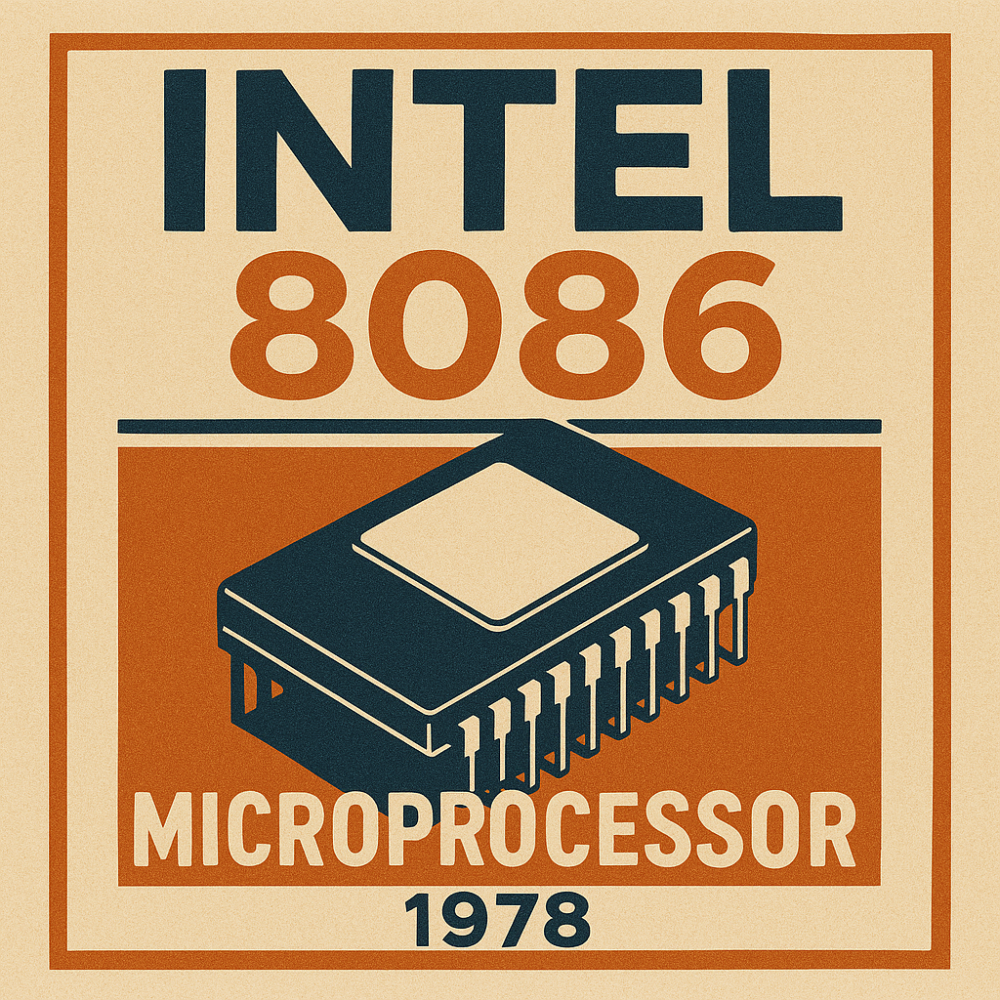
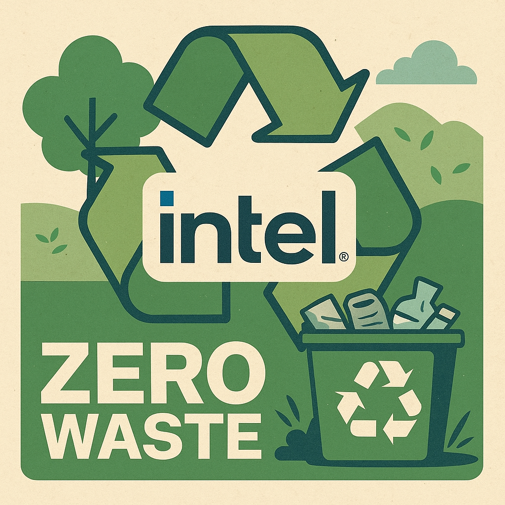
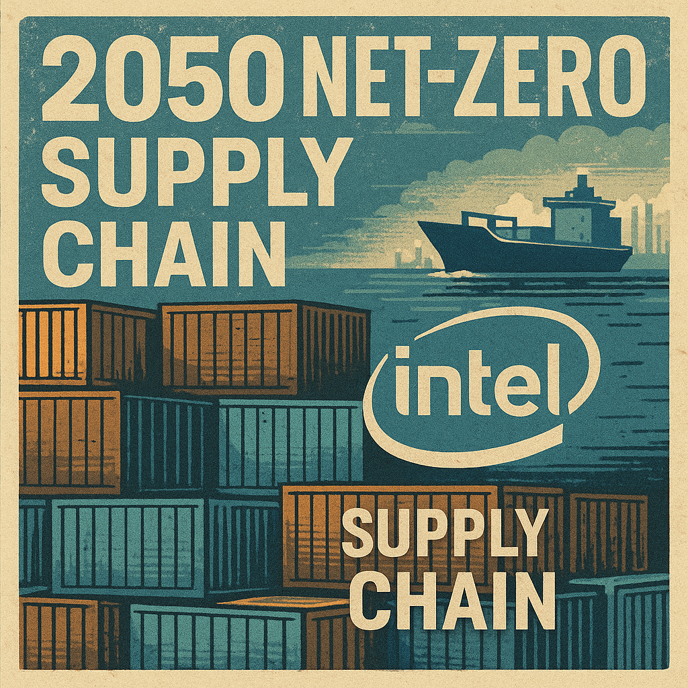

1968
Intel Founded
Robert Noyce and Gordon Moore found Intel in California.
Intel begins as “Integrated Electronics,” aiming to revolutionize semiconductors with just 12 engineers.
1971
First Microprocessor
Intel launches the 4004, the world’s first microprocessor.
The Intel 4004 chip contained 2,300 transistors and sparked the microprocessor revolution.
1978
8086 Processor
Launched the 8086, foundation of the x86 architecture.
The Intel 8086 chip powered IBM PCs and set the industry standard.
1980s–2000s
PC Revolution
Intel powers the rise of personal computers worldwide.
The Pentium and x86 chips became household names during the PC boom.
2016
Conflict-Free Processors
Intel delivers processors made with responsibly sourced minerals.
Intel becomes the first to ship conflict-free microprocessors worldwide.
2022
Net-Zero Pledge
Intel commits to net-zero operational emissions by 2040.
Intel targets Scope 1 and 2 emissions reductions with renewable power and efficiency.
2023
Measurable Progress
Intel makes big gains in renewable energy and water restoration.
Intel achieves >90% renewable electricity and net-positive water in the U.S.
2025
99% Renewable
Intel operates on 99% renewable electricity worldwide.
Reaching 99% renewable power puts Intel on track for its 2030 targets.
2030
Zero Waste Goal
Intel targets 100% renewable electricity and zero waste to landfill.
By 2030, Intel plans to eliminate landfill waste and expand circular economy practices.
2040
Net-Zero Operations

Intel reaches complete net-zero Scope 1 & 2 emissions.
Factories and offices run entirely on renewable power and efficiency improvements.
2050
Supply Chain Net-Zero
Intel commits to net-zero across its global supply chain.
Intel’s Scope 3 emissions goal ensures suppliers and partners are part of the mission.